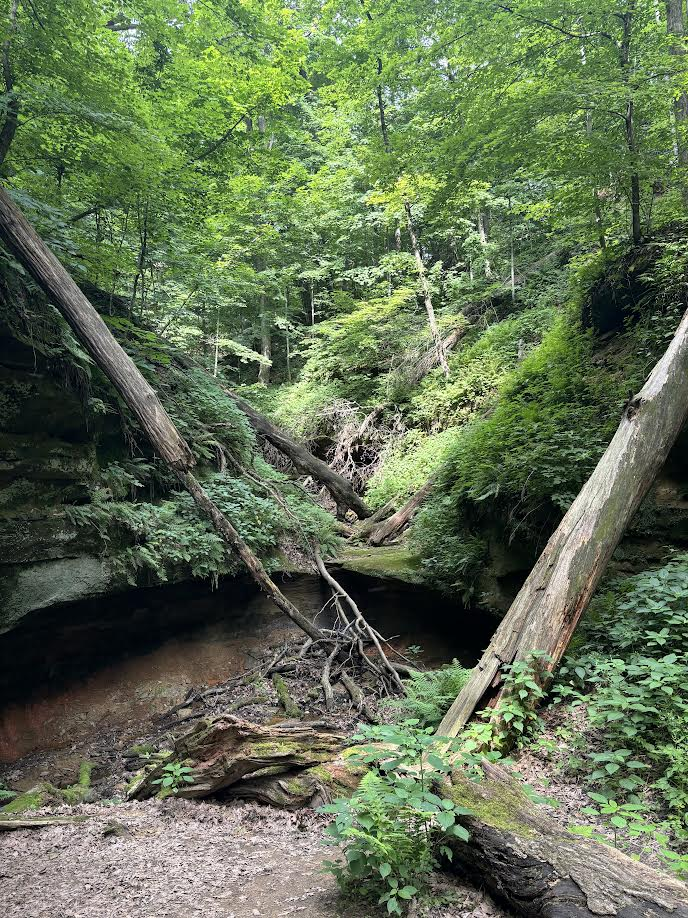

About Me
Hi! My name is Clay Gleason. I am currently studying at Indian Hills Community College where I am pursuing a degree in Software Development. Artificial Inteligence and Machine Learning has always been something I've enjoyed reading about and seeing how far these fields keep advancing. Seeing how far these fields keep growing made me want to be apart of the change for the future. I plan on pursuing more education after finishing my degree with Software Development towards one of these fields.
I am currently working at Vermeer Inc. as an Industrial Painter. I have been working at Vermeer Inc. for 3 years now and once Summer hits, I plan on trying to go for the position of Software Engineering Intern. I've enjoyed working at Vermeer and it has helped me to reach some of my own goals financially.
When I am not at painting or working on classes and projects, I enjoy going to the gym or going on a walk around the Oskaloosa Bike Trail. I also enjoy writing in my free-time and playing competitive games like Rocket Leauge and Valorant.
